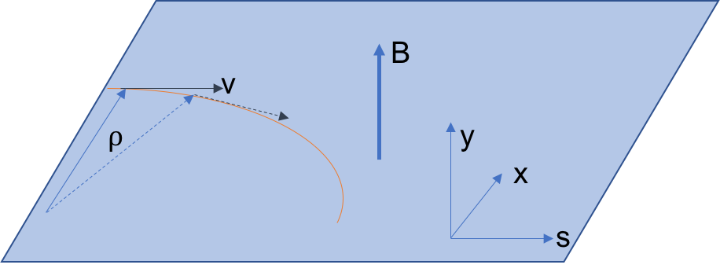
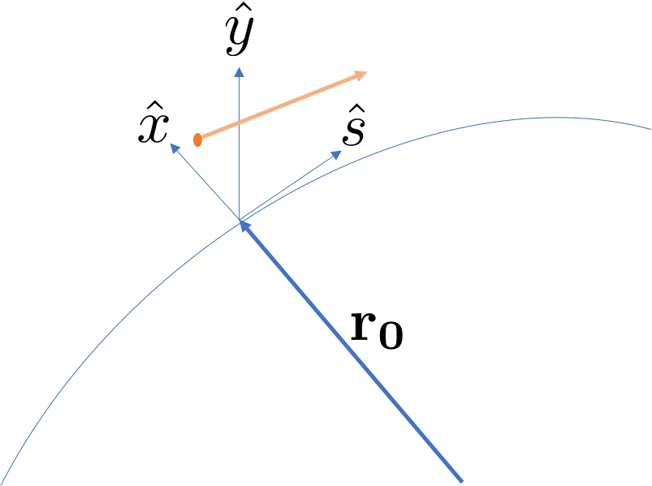
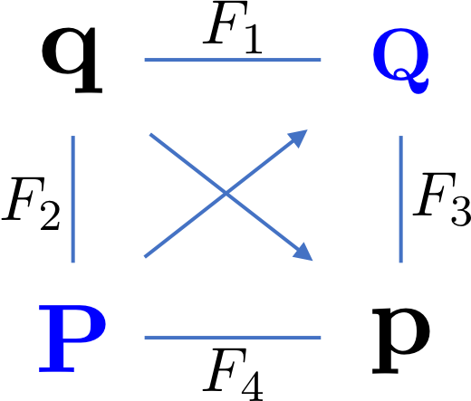
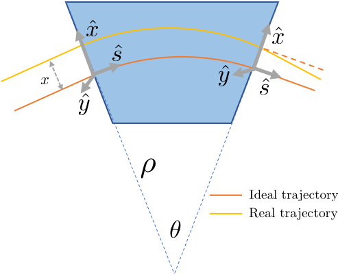
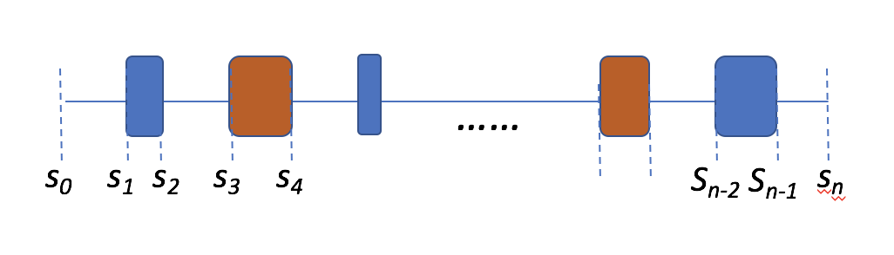
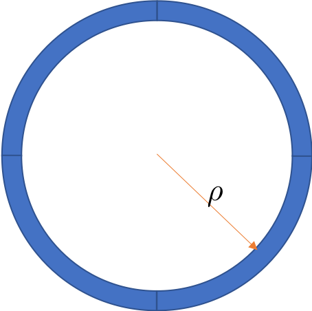
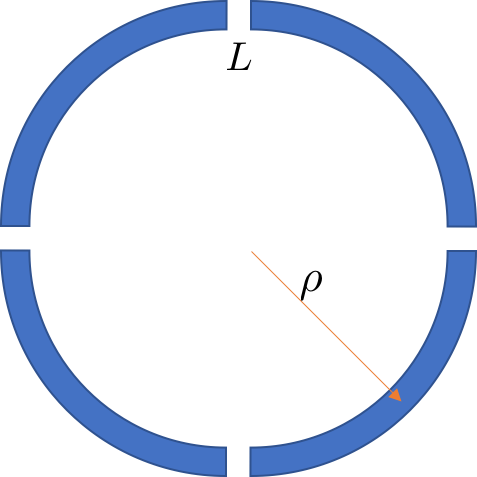
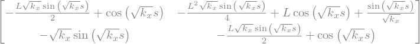

2. Linear Transverse Motion#
In this chapter,we will discuss the particle motion in perpendicular to the particle ideal trajectory in linear magnets. Linear magnets refer to the dipole and quadrupole magnets that produce linear magnetic field. The force of the particle is given by the Lorentz force:
The force is always perpendicular to its velocity, therefore the particle can not be accelerated by the magnetic field.
2.1. Design Trajectory#
The geometry of the accelerator is determined by the dipole magnet. Let us assume that the magnetic field is constant in certain region and along the vertical direction \(\mathbf{B}=B\hat{y}\). The particle travels through this region initially in \(\hat{s}\) direction in the \(x\)-\(s\) plane, as shown below.
{kind=link}

Fig. 2.1 Bending in a plane#
The equation of motion is
The momentum change will be only in the \(x\)-\(s\) plane, the velocity is always perpendicular to the magnetic field and the energy of the beam does not change, therefore:
Using the fact that the amplitude of the velocity will not change therefore:
The bending radius is given by:
Here, we define the term ‘rigidity’ \(B\rho=P/q\), to quantify ‘how hard to bend the beam’. And naturally it is only function of the particle momentum amplitude. It is a very important normalization factor of the transverse motion, as will shown later. After normalization, most our calculation becomes particle energy independent.
The dipoles that defines the geometry of the accelerator are sometimes called main dipoles. They define a ideal trajectory. A charge particle with correct energy, once inject with correct position and angle, will exactly follow the ideal trajectory.
2.2. First look: Beam motion in Quadrupole field#
The quadrupole field, from the previous section, has
where the gradient is \(G=B_0 b_1\).
Quadrupole is usually positioned so that the zero field axis is located on the ideal trajectory. The ideal particle will not experience any field from the Quadrupole.
From the Lorentz force, we have
Expand the vector production and get
Here we need to make following approximation:
paraxial approximation, indicate that the particle will only deviate the design direction by small angles, i.e. if z is the forward direction, the two transverse velocity satisfy: \(v_x,v_y \ll \left|\mathbf{v}\right|\)
In such approximation,
Using such approximation, we have
Then the equation of motion in quadrupole is simplified as
Using the definition of the rigidity \(B\rho\), the EOM can be rewritten as :
Then, we define the normalized quadrupole strength \(k=G/(B\rho)\), the EOM is simply:
Depend on the sign of \(k\), it is easy to solve the differential equation:
The three cases corresponds to a focusing quadrupole, drift space and a defocusing quadrupole respectively. The parameter \(a\), \(b\) are determined by the initial particle position \(x\) and its derivative \(x'\). We also learn that the quadrupole will always focus the particles in one transverse direction and defocus in the other.
In general, the focusing strength can be also function of the longitudinal direction and the EOM of transverse motion (using horizontal direction \(\hat{x}\) as an example) gives:
This ODE is named Hill’s equation. It can be rewritten as:
They are just the form of Hamiltonian equations of the Hamiltonian:
Latter we will use alternative method to rederive this equation and try to solve it in general.
2.3. Curvilinear Coordinate System#
The ideal trajectory is usually used as reference for the dynamics of the charged particles. This trajectory can be determined from a vector \(\mathbf{r_0}\left(t\right)\). The length along the curve is given by
Therefore our study is usually performed in the curvilinear coordinate system, named Frenet-Serret coordinate system, as illustrated in the figure:
{kind=link}

Fig. 2.2 Frenet Serret coordinate#
In this representation, the independent variable is the location on the reference orbit \(s\). The reference point on the reference orbit is defined by the vector \(\mathbf{r_0}\left(s\right)\). The unit vector of the tangent direction is given by:
The unit vector of the tangent plane and the normal plane is:
Here \(\rho\) denotes the local radius, which is the recipocal of the curvature \(\kappa\). At last, the binormal vector is simply defined by:
We defining The derivative of the unit vectors are:
Here, \(\tau\) is the local torsion of the curve. In matrix form, the relation can be expressed as:
In most cases, we focus our discussion on the motion in plane geometry, therefore the torsion is zero.
Then, the coordinate of particle can be expressed as:
Compared with the Cartesian coordinate system, \(\mathbf{r}=x \hat{x}+y \hat{y}+z \hat{z} \), the differentials give: \(\partial \mathbf{r}/\partial x = \hat{x}\), \(\partial \mathbf{r}/\partial y = \hat{y}\), \(\partial \mathbf{r}/\partial z = \hat{z}\); the differentials of the Frenet-Serret Coordinate yields:
The Lame coefficient of the Frenet-Serret coordinate system is \(h_s=1+\kappa x\) and \(h_x=h_y=1\).
In this coordinate system, the vector operation has different form, for example:
And the curl of the vector gives:
2.4. Hamiltonian Approach#
2.4.1. Lagrangian to Hamiltonian#
We consider the approach from Lagrangian of a relativistic charged particle in a E-M field.
Here, \(\mathbf{x}\) is the position and the velocity is \(\mathbf{v}=\dot{\mathbf{x}} =d\mathbf{x}/dt\). The vector potential \(\mathbf{A}\) and scalar potential \(\phi\) is the function of the position and time. The fields is calculated as:
The equation of motion can be derived from the equation
Using the Lagrangian above will get the EOM with Lorentz force.
We are interested in the generalized momentum \(P_i\) of the \(i^{th}\) coordinate \(x_i\) which is given by:
Here \(p_i\) is the momentum of the particle. The above components can be combined to get a vector form, \(\mathbf{P}=\mathbf{p}+e\mathbf{A}\), between the generalized (or conjugate) momentum \(\mathbf{P}\), the momentum \(\mathbf{p}\) and the vector potential \(\mathbf{A}\).
Then the Hamiltonian is calculated as:
With no surprise, the Hamiltonian reflects the total energy of the particle and the potential energy in the E-M field. For further analysis, we express the Hamiltonian as function of the conjugate variable pair:
Later we will use a series of canonical transformations to change the coordinates and independent variable. A generating function is handy to create the canonical transformations from old coordinate \((q,p)\) to a new set (Q,P). There are four types of generating functions:
{kind=link}

Fig. 2.3 Cheat sheet of
canonical Transformation#
The right figure shows a way to remember the relative relations of the generating functions. The new Hamiltonian \(K(Q,P,t)\) is calculated by:
2.4.2. Transformation to Frenet-Serret coordinate system#
The first necessary transformation that we need to make is to change the coordinate system to the Frenet-Serret coordinate system, i.e. from Cartesian coordinate \(\mathbf{r}=x\hat{x}+y\hat{y}+z\hat{z}\) to \(\mathbf{r}=\mathbf{r}_0(s)+x\hat{x}(s)+y\hat{y}(s)\).
We use the generating function of the \(3^{rd}\) type to perform this transformation:
The new conjugate momentum, \(\boldsymbol{\Pi}\) can be calculated as:
Therefore, in the Frenet-Serret coordinate system:
The vector potential now also take its components from the Frenet-Serret coordinate system as \(A_x=\mathbf{A}\cdot\hat{x}\), \(A_y=\mathbf{A}\cdot\hat{y}\) and \(A_s=\mathbf{A}\cdot\hat{s}\). Sometimes, the longitudinal component of the vector potential also can be define as \(A_s=\mathbf{A}\cdot \frac{\partial \mathbf{r}}{\partial s}= (1+x/\rho) \mathbf{A}\cdot\hat{s}\), which will NOT be used in the latter contents.
2.4.3. Use \(s\) as independent variable#
Next, we need charge the independent coordinate from time to ‘\(s\)’, the position on the reference orbit. The Hamiltonian above is function of \((x,\Pi_x, y, \Pi_y, s, \Pi_s,t)\) and the Hamiltonian equation are:
To change the independent coordinate to \(s\), we first look at the derivative:
Using the differential chain rule of the implicit equation \(H(x,\Pi_x, y, \Pi_y, s, \Pi_s,t)-f(t)=0\), we have:
Use the similar trick, we will find that
We also find the other two relationship easily:
Therefore we can choose the new Hamiltonian \(K=-\Pi_s(x,\Pi_x, y, \Pi_y, H, t,s)\), which will satisfy the Hamiltonian relation. However, it is awkward to set \(H\) as the ‘coordinate’ and \(t\) as ‘general momentum’. To fix this, we can set the conjugate pair as \((t,-H)\). Therefore the new Hamiltonian reads:
2.4.4. Simplifications of Hamiltonian#
Since the new Hamiltonian has a very complicated form, we will use the following simplifications.
First, we have seen that for 2-D magnetic field, only the longitudinal vector potential is needed. We can set the both transverse potential to be zero: \(A_x=A_y=0\). Then, the generalized momentum reduce to the particle’s momentum \(\Pi_{x/y}=p_{x/y}\).
Second, let us assume the potential \(\phi\) is not time dependent, then we can make canonical transformation \((t, -H)\) to \((t, -h)\) with \(h=H-e\phi\). \(h\) is just the total energy of the particle and the first two terms give the momentum of the particle \(p^2=\left(h/c\right)^2-(mc)^2\).
Third, Let’s define a reference momentum of the particle \(p_0\), and each particle will have a deviation from the reference, \(p=p_0(1+\delta)\). \(\delta\) is called fractional momentum deviation. We scale the Hamiltonian \(K\) by factor of \(p_0\) and get new \(\tilde{K}\).
Last, we will make a canonical transformation from the pair \((t, -h)\) to \((z,\delta)\) with generating function \(F_2=f(\delta)t\) and \begin{equation} -h=\frac{\partial F_2}{\partial t}=f(\delta) \end{equation} The new coordinate \(z\) is calculated as \begin{align} z&=\frac{\partial F_2}{\partial \delta} \nonumber \ &=\left(-\sqrt{c^2(1+\delta)^2+m^2c^4}\right)’t\nonumber \ &=-\beta ct \end{align} the Hamiltonian becomes:
The new longitudinal coordinate \(z\) has the meaning: the distance of the particle travels at current speed.
For later convenience, we remove the tilde of the above Hamiltonian and it looks like:
2.4.5. Further assumptions#
The above Hamiltonian can be consider as exact in most accelerator cases. Next, we will make assumptions and expand the Hamiltonian up to 2nd order. The assumptions includes:
Momentum spread is very small. For any particle, \(\delta \ll 1\)
Paraxial approximation, the longitudinal momentum is close to the reference momentum and \(p_x,p_y \ll 1\)
Then we can expand the Hamiltonian up to 2nd order in \(p_x\) and \(p_y\) and have:
Recall that $\(p_x=\frac{\mathbf{p}\cdot\hat{x}}{p_0} \;;\; p_y=\frac{\mathbf{p}\cdot\hat{y}}{p_0}\)$
is different from the orbit slope:
Therefore, we only consider the transverse motion without energy dependence, the slope \(x^\prime\) and \(y^\prime\) can be used as conjugate momentum in paraxial approximation. Otherwise using the slope instead of \(p_x\) and \(p_y\) will violate Hamiltonian dynamics.
In 4-Dimensional motion for particle with reference momentum, the Hamiltonian is
2.4.6. Vector potentials for linear elements#
Now, its time to consider the real form for the vector potential \(A_s\). We will limit our discussion within linear regime.
For a main dipole, where the reference orbit bend inside with radius \(\rho\) or its reciprocal, curvature \(\kappa=1/\rho\), we need to find \(A_s\) to get vertical magnetic field \(\mathbf{B}=B_0(s)\hat{y}\) in the Frenet-Serret coordinate system:
It seems exact solution for this differential equation doesnot exist. However, with the assumption of \(\left|x\right|\kappa \ll 1\), we can get approximation of \(A_s\) up to second order. Let’s assume \(A_s=-B_0(s)(a x + bx^2)\). Then we get:
By solve the index of the \(0^{th}\) and \(1^{th}\) terms, we get \(a=1\) and \(b=-\kappa/2\). Therefore in a constant field main dipole:
For quadrupole, the radius is infinity. The vector potential will be the same as its form in a Cartesian coordinate. From the Beth’s representation:
Here \(G(s)\) is the field gradient in unit of [Tesla/m].
We get the Hamiltonian and truncate down to second order, and recall that the rigidity \(B_0 \rho=p_0/e\):
Here we use normalized quadrupole strength \(k(s)=G(s)/B_0\rho\). It is the most useful quantity in the simulation to characterize the strength of a quadrupole.
In the approximate Hamiltonian of dipole and normal quadrupole, we can first ignore the constant, then split it in to two separate Hamiltonian, one for each transverse direction.
This indicate that the motion of two directions are de-coupled and can be treat separately.
The equations of motion can be found from Hamiltonian equation:
We returned to the Hill’s equation including both the main dipole and quadrupole in the Frenet-Serret coordinate system.
Combine the effect of dipole and quad, there is an chance to have focusing effect in both plane:
If a machine can have this condition through out, the motion of both transverse plane will be stable. This is called weak focusing.
2.5. Transfer Matrix for Linear Elements#
It is convenient to write the solution of the Hill’s equation using matrix form. Such matrix is named betatron transfer matrix. The motion in each transverse direction can be described by \(2\times 2\) matrix.
2.5.1. Drift space#
The EOM for drift space is simply \(x''=0\) and \(y''=0\). Using horizontal direction as instance, if the initial condition at the starting point \(s_0\) are \(x(s=s_0)=x_0\) and \(x'(s=s_0)={x_0'}\). The solution is:
Or in matrix form
We write the transfer matrix for drift space as:
2.5.2. Dipole (main)#
Dipole itself will not affect the beam other than bending. However, the choice of the Frenet–Serret system results a focusing effect in kinetics, as shown in the figure.
{kind=link}

Fig. 2.4 Scratch of horizontal dipole focusing effect#
If the particle is injected \(x\) (>0) away from the ideal trajectory, the particle will travel longer in the dipole than the ideal particle, which results a larger bending. When the bending angle \(\theta\) is small, we have:
Therefore the particle satisfy the following differential equation in dipole:
For the dipole that bend the beam with the radius \(\rho\) in horizontal plane, the \(x\) direction follows an EOM as a harmonic oscillator, while in \(y\) direction, the motion is just as in a drift space.
The matrix form in the dipole can be easily get as:
The transfer matrix for dipole in horizontal space is:
In a small angle approximation \(l/\rho \ll1\), we can expand the matrix up to first order of \(l/\rho\). The matrix reduce to a drift space:
2.5.3. Quadrupole (Normal)#
In the example before, we already derived the solution for particle in the quadrupole. It can be rewritten in the matrix form as
Usually, the quadrupole has short length and strong field gradient. We may model such short quad as a ‘lens with zero length’, and define the focal length \(f\) as:
In such limit the transfer map for a thin-length quad is
2.5.4. Chain of linear elements#
{kind=link}

Fig. 2.5 A cartoon of accelerator lattice#
In accelerators, we have chain of magnets, as illustrated above. Each magnet has a transfer matrix, the transfer matrix for the chain can be found by matrix multiplications:
Note that the order of the multiplication is the reverse order of the placement of the magnet.
As you will see later, all transfer matrices are invertible. Since \(M(s_1, s_0)M^{-1}(s_1,s_0) = M^{-1}(s_1, s_0)M(s_1,s_0) = I\), \(M^{-1}(s_1,s_0)\) simply represents the ‘back-trace’ matrix from \(s_1\) back to \(s_0\).
Note
In most cases, \(M^{-1}(s_1,s_0)\) is NOT the same as \(M(s_0,s_1)\), which is the transverse matrix in the reversed the directions.
2.5.5. Properties of the betatron transfer matrix#
2.5.5.1. Symplectic condition#
Let’s return to the most general form of the matrix \(M\):
The matrix represent the solution:
that satisfy the Hill’s equation with general focusing term \(K(s)\):
where \(K(s)=k(s)+1/\rho^2(s)\).
It can be constructed from the Hamiltonian, which reads:
The implicit requirement raised from fact that the system is described by a Hamiltonian is called symplecticity. The symplectic property for a 1-D system is the simplest case. To review this property, we use the concept of Wronskian of differential equation. For 1-D second order ODE, there aways exist 2 independent solution. We name it \(x_1(s)\) and \(x_2(s)\). Wronskian is defined as:
where \(\mathbf{X}\) is known as the fundamental matrix. The derivative of Wronskian reads
Therefore Wronskian is the constant of motion and not zero(the two solution are indepedent).
Then from the definition of the fundamental matrix:
Take the determinant on both sides, we have
Since \(W(s)\) is constant of motion, therefore the determinant of transfer matrix is always 1. This is a sufficient and necessary condition of symplecticity for 1-D system. We will learn later, in multi-dimension problem, this is still a necessary condition but not sufficient anymore.
2.5.5.2. Long-term stability condition#
The symplecticity ensures the area phase space is constant. However, in most times, we have stronger requirements for a repeating chain of elements.
In accelerator, the beam usually will pass through a chain of elements (called cell) many times. A long lattice usually consist of repeating cells. In a ring accelerator, the particle will travels through the lattice billions of turns. If the transfer matrix for one cell is \(M\), we are interested in the behavior of repeating \(k\) cells
where k is a very large integer or infinity.
To avoid the either \(x\) or \(x'\) to be very large (or infinity) after k cells. We required that the absolute value of the eigenvalues of \(M\) is no larger than 1. The eigenvalue is found by:
or
To satisfy \(|\lambda|\le 1\), we require
This is the stable condition for one cell in periodical structure.
2.5.6. First Look at Parametrization#
2.5.7. Revisit, the ‘weak focusing’#
{kind=link}

Fig. 2.6 An ideal weak focusing ring#
Let us consider an accelerator, built by one type of combine function magnet that is stable in both transverse deirections. This is named later as ‘weak focusing’. The weak focusing satisfies:
Here, \(k_x(s)\) and \(k_y(s)\) are piece wise constant and always positive, and \(k_x(s)+k_y(s)=1/\rho ^2\).
We can write the matrix term for the weak focusing as:
The matrix indicates that except a scaling factor, the transfer matrix is just a rotation of the phase space. If we define \(P_x=x'/\sqrt{k_x}\) and \(P_y=y'/\sqrt{k_y}\), the transfer matrix for \((x,P_x)\), \((y,P_y)\) are just rotation matrix with angle \(\sqrt{k_{x/y}}s\) respectively. Then we call the angle betatron phase advance.
If we have an entire ring, made of weak focusing structure as shown above, the matrix for entire ring gives:
It means, after one turn the phase advance of the two transverse plane is just \(2\pi\sqrt{k_{x/y}}\rho\). We define the transverse tune \(\nu_{x/y}\) is the one turn phase advance in unit of \(2\pi\). Therefore:
{kind=link}

Fig. 2.7 A ‘realistic’ weak focusing ring#
For continuous weak-focusing ring, we always have:
We may also look at the weak focusing ring is made of several sections with small drift space \(L\) in between. This is a more realistic case, since we need non-magnetic region for injection/extraction, acceleration, and beam diagnostics devices.
We consider a segament, starting and ending at the middle of the drift space, whose transfer matrix is represented as:
import sympy
sympy.init_printing(use_unicode=True)
sqkx,s,l=sympy.symbols("\sqrt{k_x},s,L")
def mat_f(sqk,s):
return sympy.Matrix([[sympy.cos(sqk*s),sympy.sin(sqk*s)/sqk],
[-sympy.sin(sqk*s)*sqk,sympy.cos(sqk*s)]])
def mat_d(d):
return sympy.Matrix([[1,d],[0,1]])
mat_seg=sympy.simplify(mat_d(l/2)*mat_f(sqkx,s)*mat_d(l/2))
mat_seg
<>:1: SyntaxWarning: invalid escape sequence '\s'
<>:1: SyntaxWarning: invalid escape sequence '\s'
/var/folders/6f/_6jt88pn2gl5zsg16g5zt1z40000gq/T/ipykernel_7036/479373832.py:1: SyntaxWarning: invalid escape sequence '\s'
sqkx,s,l=sympy.symbols("\sqrt{k_x},s,L")

When \(L\sqrt{k_x}\ll1\), the diagnal terms can be written as:
where \(\Delta \phi=\arcsin(L\sqrt{k_x}/2)\). Here we ignore any terms beyond \(L^2 k(x)\). And we know that \(L^2 k(x) \le L^2/\rho^2\)
Therefore for one turn, which has \(N\) such segments, the phase advance is :
And the scaling factor for change the \((x,x')\) to \((x,P_x)\) also changes by an extra factor \(\left(1+\frac{NL}{4\pi\rho}\right)\).
The weak-focusing scheme has large limitation since the bending gradient has to be continuous. Later on the theory of strong focusing enables smaller beam size.